Meet the Board!
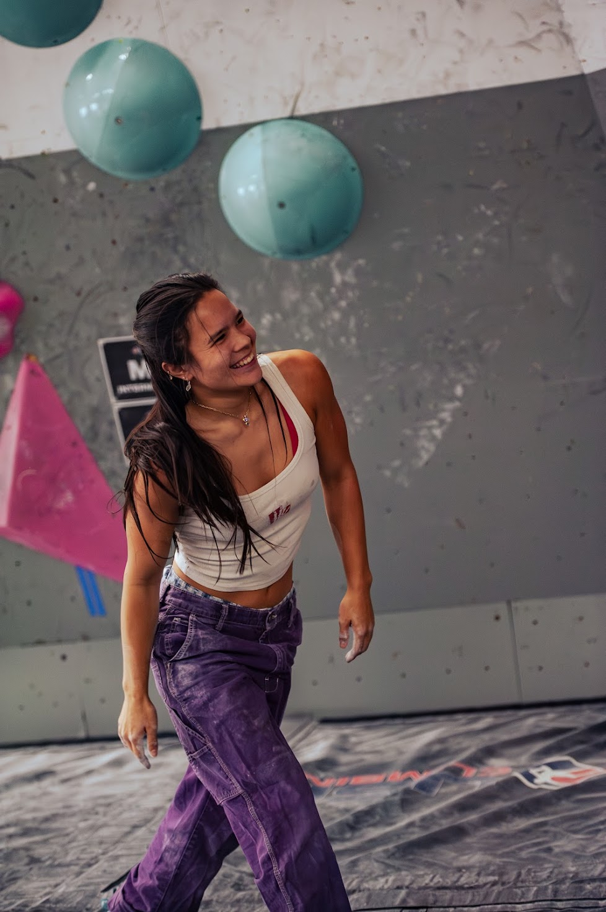
Sophia Hoermann
(She/her)
President and Head Coach
Hello! I’m Sophia, and I’m a super senior majoring in world languages and cultures and computer science! I’m from the SF Bay Area, and I grew up competing in youth competitions and climbing outside, mainly in Bishop and Tahoe. These days, I love bouldering in Little Cottonwood Canyon and anywhere else I can get out to! Outside of climbing, I’m really into knitting and crafting, cooking, and doing puzzles (jigsaw or otherwise). I’m so psyched to climb and hang with you all this year!
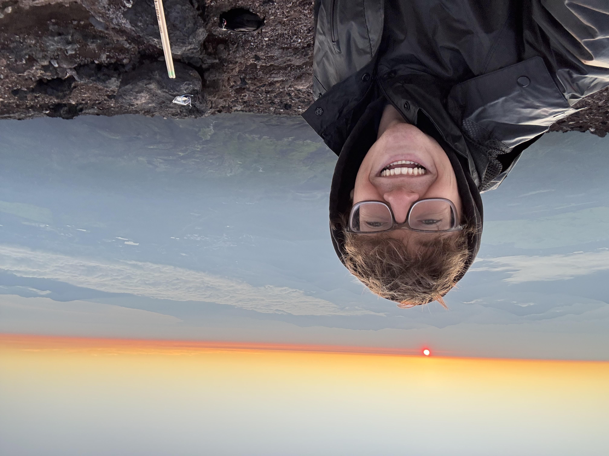
Ethan Laynor
(He/him)
Vice President
Hey! I'm Ethan, a junior studying Computer Science at the U. I've been climbing for a little over three years, and it’s quickly become one of my biggest passions. Outside of climbing, I love spending my time outdoors, whether that’s hiking, camping, running, skiing, snowboarding or even reading in a hammock. I'm stoked to be a part of the Team and look forward to a great year!
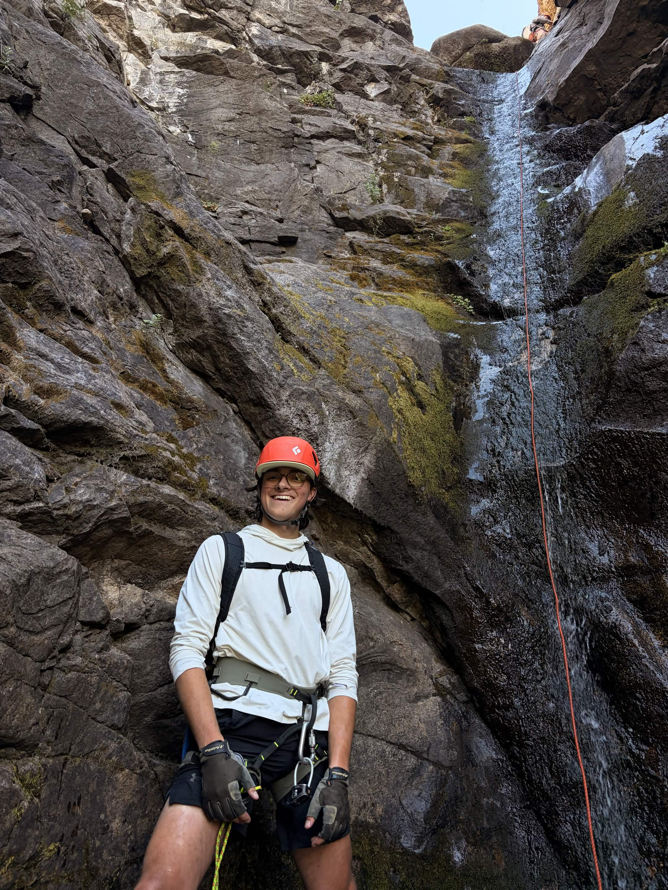
Jake Roth
(He/him)
Treasurer / USA Climbing Coordinator
Hi, I'm Jake! I'm a third-year student studying Mechanical Engineering. I'm from Killington, Vermont, and I moved to Salt Lake last year. Some of my favorite places to climb are Red Rocks, St. George, and Little Cottonwood. Some of my other hobbies are Skiing, Music, and all things nerdy.
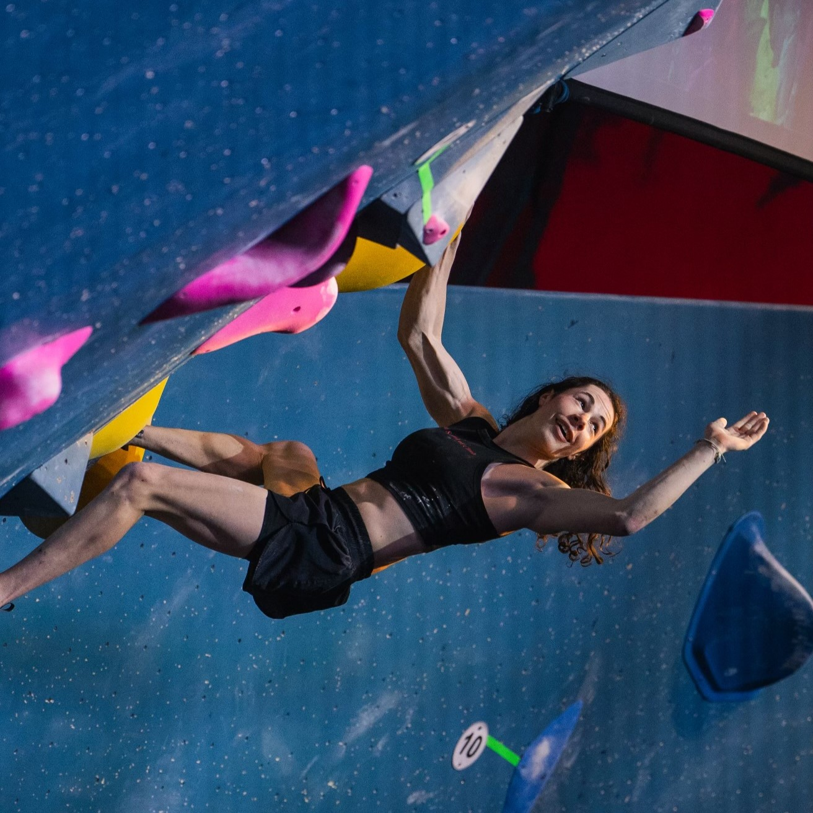
Gavin Albright
(They/she)
Coach
Hi! I am a fourth year studying graphic design and am also the head routesetter at the Summit. I grew up in Wisconsin and have been competing since I was 9. I’ve won youth nationals and was on the Elite National Reserve Team for several years. I’ve been getting more and more into outdoor climbing as well as playing volleyball, frisbee, board games, and Magic the Gathering. Stoked to meet you all and have a lot of fun!
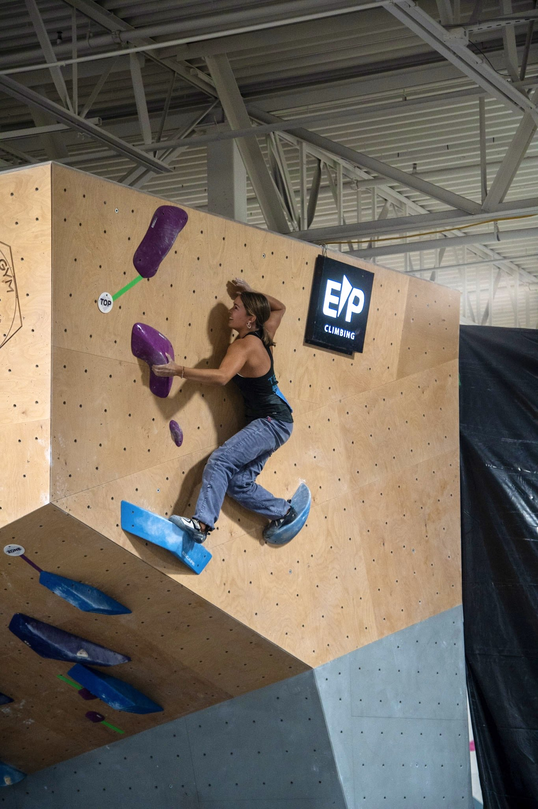
Sofia O’Regan
(She/her)
Coach
Hi! I’m a third year studying business marketing and a transfer student! I’m from San Diego, California and transferred to the U my sophomore year. I’ve been competitively climbing for 6 years and coaching for 2. I also love to travel and go camping. Can’t wait for outdoor season and future comps!
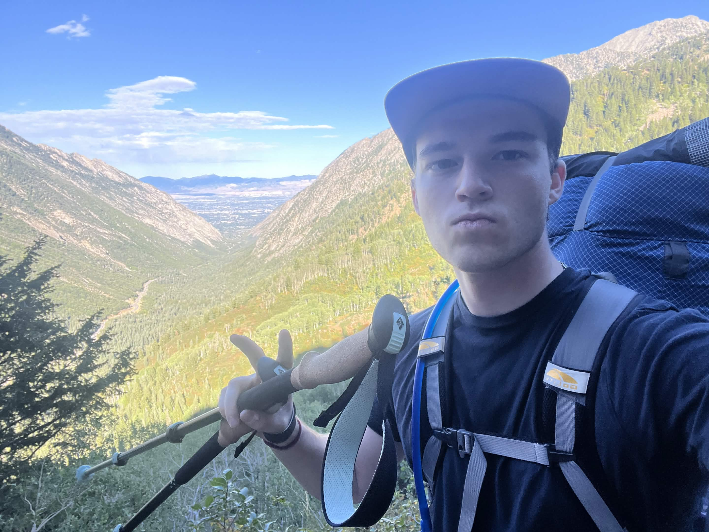
Arthur Morton
(He/him)
Outdoor Trip Coordinator
Hello! I am a junior at the U majoring in Computer Science. I grew up in San Francisco and Las Vegas but didn’t develop a love for climbing until coming here to Utah. I love doing anything outdoors whether is backpacking, climbing, or snowboarding! I can’t wait to meet all of you and lead some amazing trips for everyone!
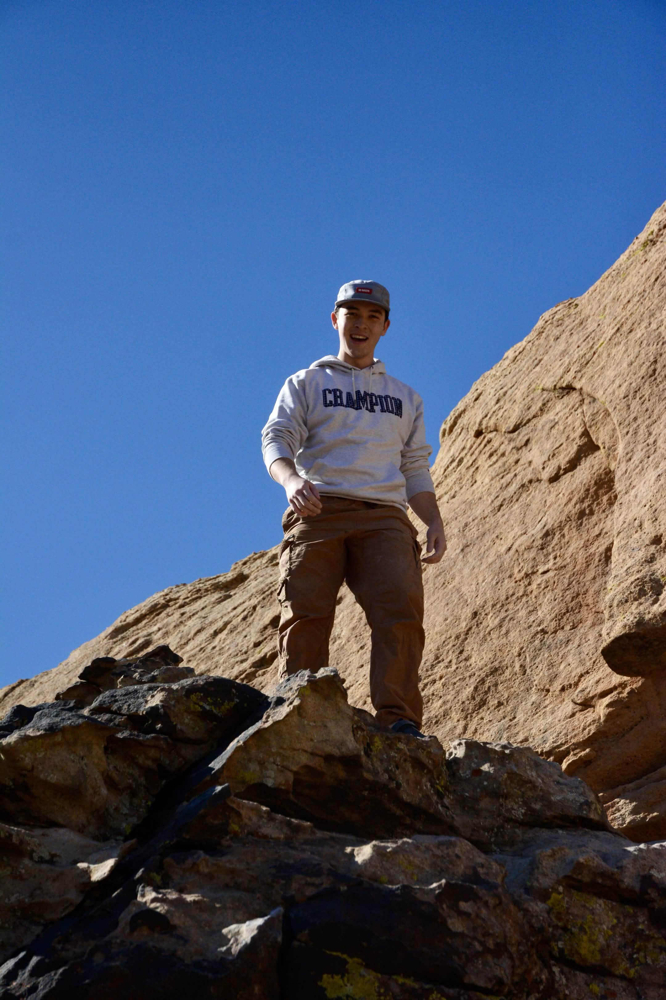
Colin Logue
(He/him)
Outdoor Trip Coordinator
Hey! I’m Colin, a third year Computer Science student at The U. I grew up in New Hampshire and came to The U for the skiing and climbing. I’m into lots of outdoorsy things so no matter the time of year I love to be in the canyons! I’m super psyched to bring you on some awesome trips this year!
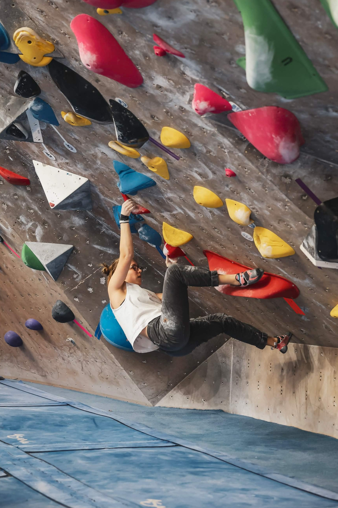
Lily Schwertz
(She/her)
Event Coordinator
Hey I’m Lily! I’m a third year studying biology on a premed track. I’m from Salt Lake and Bozeman, MT but am back for school (can’t beat these mountains). My favorite places to climb are Little Cottonwood and this little crag called Allenspur in Montana. I’m also a big skier and love winding down with a good book.
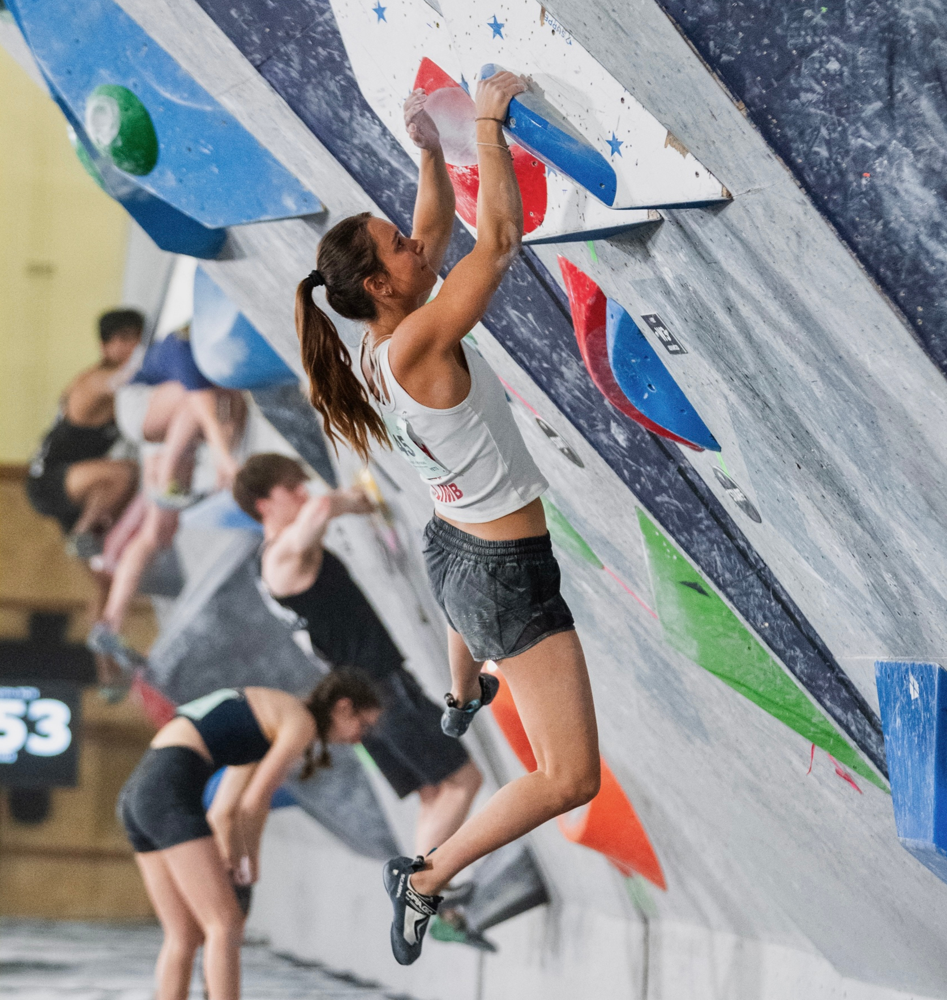
Cassandra Nagy
(She/her)
Gear + Merch Coordinator
Hey y’all! I’m Cassandra, I’m a sophomore studying business at the U. I’m from Austin, TX, and I competed on Team Texas and Team Arete through youth. I have recently been psyched on outdoor climbing and I can’t wait to explore Utah more and get out as much as I can! Hyped for this year and the comps to come, SKO UTES!
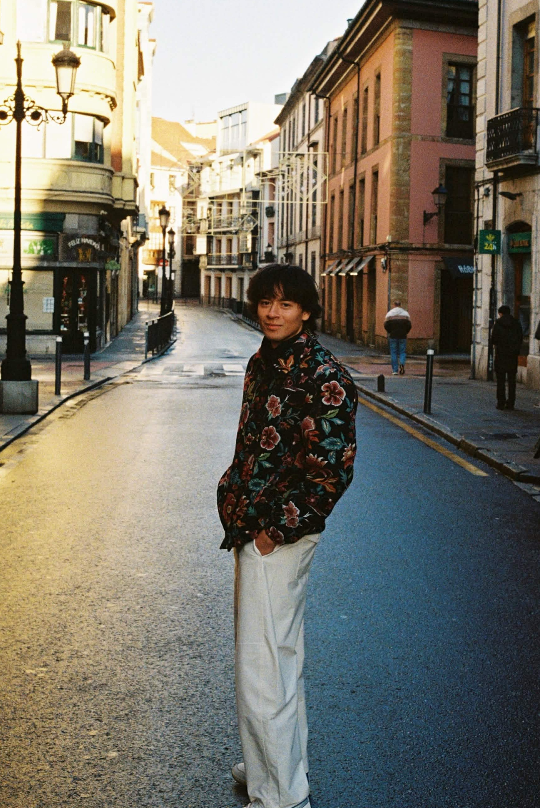
David Montejo
(He/him)
Gear + Merch Coordinator
What’s good, I’m David. I’m a pre-dental senior majoring in HSP, and I’ve been climbing for around 4 years. I’ve been in Utah for a while, but I’m from Mexico originally. I love being outdoors for any reason, and playing any sport at all (not pickleball). My goal this year is to get some more multi-pitch XP under my belt, so I’ll see yall in the canyons.
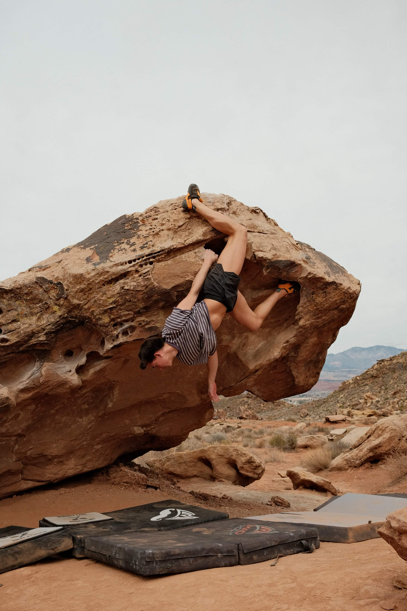
Gavin McCann
(He/Him)
Social Media Manager
Hello! I am a sophomore and majoring in Business and hoping to go into marketing! I’m born and raised in Austin, Texas and have been climbing competitively for 8 years now! Outside of climbing I am a barista and love to make people really good drinks, and I love to make pottery on the wheel! Can’t wait for competition season!!